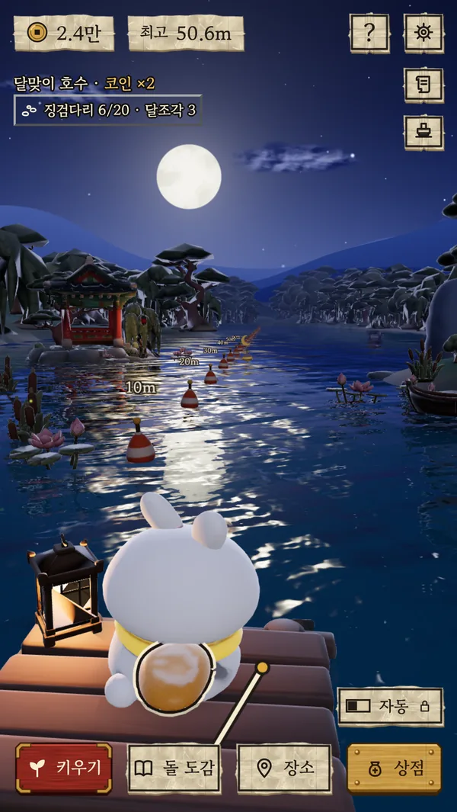
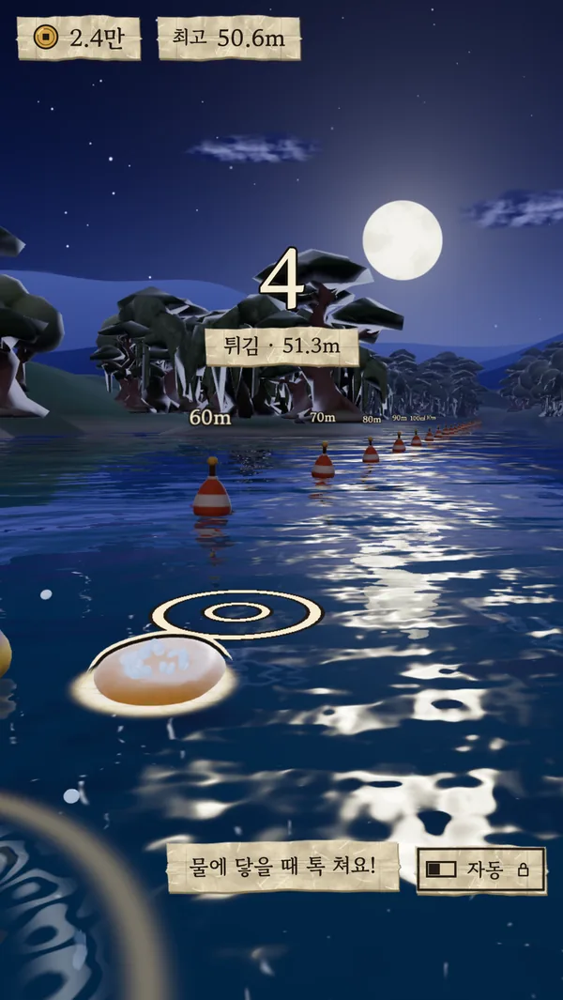
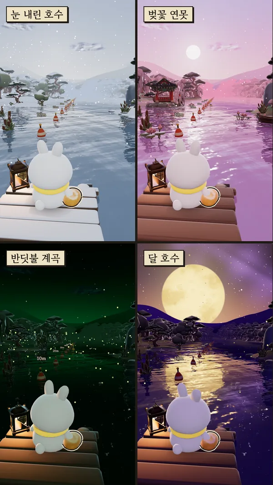

01지금 만드는 게임
No.01 · 구글 플레이 출시 준비 중
한 마리만 더
Just One More Fish · 도트 낚시와 수족관
작은 배를 타고 바다로 나가 물고기를 낚고, 잡은 물고기로 나만의 수족관을 꾸미는 게임이에요. 오래 붙잡고 있지 않아도, 잠깐 들러 한 마리 낚고 가도 괜찮도록 만들고 있어요. 그러다 "딱 한 마리만 더" 하게 되는 게임이었으면 해요.
- 찌가 쑥 잠기는 순간, 직접 낚아채는 손맛
- 바다 다섯 곳, 물고기 일흔여섯 종 (달마다 바뀌는 '이달의 물고기' 열두 종 포함)
- 잡을 때마다 한 장씩 모이는 물고기 그림, 바다마다 도감을 다 채우면 트로피
- 장식과 배경으로 꾸미는 나만의 수족관, 자리를 비운 동안에도 손님이 찾아와요
- 매일 출석 도장과 오늘의 미션
- 한국어 · 일본어 · 중국어(번체) · 영어
- 확률형 뽑기는 넣지 않아요
No.02 · 구글 플레이 출시 준비 중
통통 물수제비
Bouncy Skip · 토끼가 뜨는 물수제비
달밤 호숫가에서 찹쌀떡처럼 통통한 토끼가 돌을 휙 던져요. 돌이 물에 닿는 순간 화면을 톡 하고 박자를 맞추면, 돌이 통통 한 번 더 튀어 올라요. 한 판이 몇 초면 끝나서, 잠깐 들러 몇 번만 던지고 가도 괜찮아요.
- 휙 던지고, 물에 닿을 때 톡. 던지는 방식은 편한 것으로 골라요
- 노을 지는 개울, 은하수가 뜬 강, 눈 오는 호수, 벚꽃 연못처럼 시간과 날씨가 저마다 다른 장소 여덟 곳
- 물가에서 줍고 코인으로 모으는 돌 스물일곱 종, 달항아리와 단청 같은 한국풍 돌도 있어요
- 목도리와 갓으로 토끼 꾸미기
- 매일 출석 도장과 오늘의 미션, 업적 서른 개
- 한국어 · 일본어 · 중국어(번체) · 영어
- 확률형 뽑기는 넣지 않아요



02개발 기록
- 2026.11달나라 게임즈라는 이름을 짓고, 이 작은 사이트를 열었어요.
- 2026.11낚시 게임 다섯 번째 시제품. 미끼 높이를 맞추고 직접 챔질하는 손맛을 넣었어요.
- 2026.11출석 도장과 미션, 달마다 바뀌는 이달의 물고기, 수족관 꾸미기, 도감 트로피를 넣었어요.
- 2026.11게임 이름을 「한 마리만 더」로 정했어요. 쓰레드에 올린 후보 중에서 골랐어요.
- 2026.11안드로이드 앱으로 처음 만들어 폰에서 돌려 봤어요.
- 2026.11두 번째 게임 「통통 물수제비」를 만들기 시작했어요. 달밤 호수에서 토끼가 물수제비를 떠요.
- 2026.11두 게임을 한국어, 일본어, 중국어(번체), 영어로 볼 수 있게 했어요.
- 2026.11「통통 물수제비」 장소 여덟 곳에 저마다 다른 시간과 날씨를 입혔어요.
- 다음두 게임을 구글 플레이 비공개 테스트에 올릴 준비를 하고 있어요.
03편지 보내기
게임 이야기, 오류 제보, 같이 해보고 싶은 일, 무엇이든 편하게 보내 주세요. 보통 2~3일 안에 답장해요.
편지 보내기
dalnaragames.official@gmail.com
인스타그램 @dalnara_games
 달나라 게임즈
달나라 게임즈